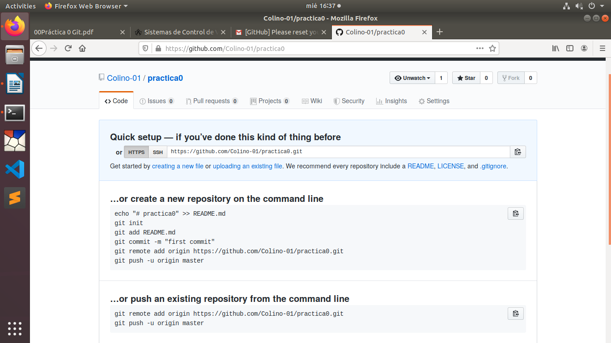
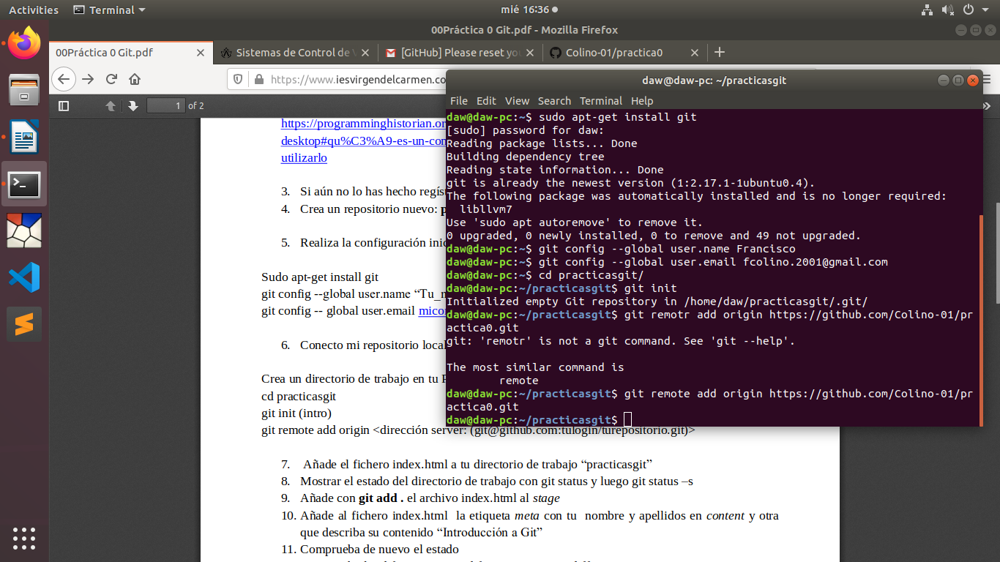

1.Diferencias entre Sistema de control de versiones locales, centralizados y distribuidos
Centalizados:Cuando se desarrollaron los sistemas de control de versiones, muchos de ellos se hicieron en esquema cliente-servidor, con lo que el desarrollo de las herramientas está claramente diferenciado entre:
el cliente, que es la aplicación que se conecta al servidor y mantiene una copia local del repositorio, así como se encarga, generalmente de la corrección de conflictos y la mayoría de lógica del sistema.
el servidor, que es el sistema que toma los datos del cliente y los almacena a espera de una o múltiples peticiones de esos datos. Este sistema se encargaría del almacenamiento de las versiones, control de concurrencia, bloqueos y otras características parecidas a las de las bases de datos.
¿Qué limitaciones y características posee? Haremos una breve lista:
El sistema servidor es un repositorio, como los que mantienen los clientes, pero perfectamente sincronizado y sin que dé lugar a conflictos. Es la copia maestra de los datos.
Cuando un sistema web quiere hacer un listado, puede tomar los datos de este servidor y siempre serán seguros, con lo que no tendrá que resolver conflictos, ni tendrá que hacer mezclas.
Una copia local debe de poder mezclarse con el repositorio central cuando queramos publicar un conjunto de cambios o cuando queramos tomar la última versión publicada en concordancia con nuestra copia local.
Es normal ver en muchos de estos sistemas ramificaciones, versiones, etiquetas, o similares, a modo de tener varias copias según nos interese. Estas ramificaciones están en el servidor y en algunos casos puede llegar a ser muy costosa su diferenciación.
Distribudo: Desarrolladores como Linus Torvalds, Eric S. Raymond y otros más, han desarrollado sistemas distribuidos de control de versiones tales como git, Baazaar, Mercurial, darcs, … estos sistemas se destacan por haber sido desarrollados en un formato distribuido, esto quiere decir que, en sí, no hay un servidor que mantenga una copia del repositorio, sino que está mantenida entre los clientes que estén en uso del repositorio y, al igual que los clientes P2P, mientras más desarrolladores haya conectados, mejor conectividad habrá entre todos.
Esto da una serie de ventajas al sistema centralizado, como son:
Disponer de forma distribuida de la información del repositorio al completo, tanto de forma local, como a través de los demás componentes del grupo.
Cada cambio se va replicando entre los demás equipos distribuidos, a modo de que puedan emplear esos datos y actualizarlos en sus sistemas.
El sistema de control de versiones distribuido ha sido pensado con la forma de trabajo basada en ramas, unión central en una sola versión (trunk) y liberaciones (o tags). Con lo que cada rama puede identificarse como cada copia distribuida que se use.
Una máquina servidora puede emplearse, al estar siempre conectada, como otro punto de sincronización, con la ventaja de que, aunque cayera, mientras haya más miembros conectados, el sistema siempre se mantiene activo y con buen ancho de banda.
2.Qué es GitHub y cuáles son sus utilidades
GitHub es una plataforma de desarrollo colaborativo de software para alojar proyectos utilizando el sistema de control de versiones Git.
GitHub aloja tu repositorio de código y te brinda herramientas muy útiles para el trabajo en equipo, dentro de un proyecto.Además de eso, puedes contribuir a mejorar el software de los demás. Para poder alcanzar esta meta, GitHub provee de funcionalidades para hacer un fork y solicitar pulls.Realizar un fork es simplemente clonar un repositorio ajeno (genera una copia en tu cuenta), para eliminar algún bug o modificar cosas de él. Una vez realizadas tus modificaciones puedes enviar un pull al dueño del proyecto. Éste podrá analizar los cambios que has realizado fácilmente, y si considera interesante tu contribución, adjuntarlo con el repositorio original.
3.Si aún no lo has hecho regístrate en la plataforma GitHub
4.Crea un repositorio nuevo: practica0

5.Realiza la configuración inicial de Git en tu ordenador.
Sudoapt-get install git
git config --global user.name “Tu_nombre”
git config --global user.email micorreo@correo.es

6.Conecto mi repositorio local con el repositorio remote:Crea un directorio de trabajo en tu PC “practicasgit” dentro de tu directorio home.
cd practicasgit
git init (intro)
git remote add origin <dirección server: (git@github.com:tulogin/turepositorio.git)>
7.Añade el fichero index.html a tu directorio de trabajo“practicasgit”
8.Mostrar el estado del directorio de trabajo con git status y luego git status –s
9.Añade con git add .el archivo index.html al stage
10.Añadeal fichero index.html la etiquetametacon tu nombre y apellidos en contenty otra que describa su contenido “Introducción a Git”
11.Comprueba de nuevo el estado
12.Compruebalas diferenciaso modificacionescon git diff
13.Muestrael estado del directorio de trabajo con git status y luego git status –s
14.Añadecon gitadd . el archivo index.html al índiceo stage
15.Repitemostrar el estado del directorio de trabajo con git status y luego git status –s
16.Diferencias entre git diff y git diff –cached
17.Crear commit con git commit –m “mi primer commit”
18.Hacer git log y git log –oneline
19.git push –u origin master(para enviar mis cambios de mi copia local a mi repositorio remoto)
20.Crear un archivoREADME.md(ReTex) que contenga “Primer documento html para github”
21.Mostrar el estado del directorio de trabajo con git status y con git diff
22.Registrar los cambios con git add .
23.Crear commitcon commit –m “mi segundo commit”
24.git log o git log –online
25.git status
26.git push –u origin master